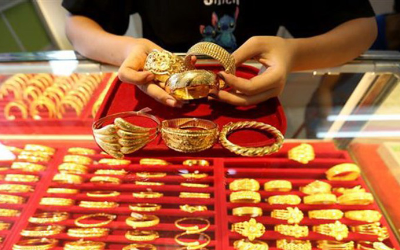

Thời điểm 8h40 theo giờ Việt Nam, giá vàng thế giới đứng ở mức 1.902 USD/ounce, tăng 2 USD/ounce so với cùng giờ sáng qua. Chiều và đêm qua theo giờ Việt Nam, giá vàng bất ngờ vọt tăng, đã có lúc lên tới 1.918 USD/ounce. Ngay khi giá vàng tăng mạnh, giới đầu tư lập tức chớp thời cơ, đua nhau bán tháo kim loại quý. Động thái này đã khiến giá vàng không trụ vững được ở mức cao, “bốc hơi” ngay 20 USD, rớt xuống sát ngưỡng kháng cự 1.900 USD. Giá vàng sáng nay vẫn neo ở mức cao, một phần do đồng USD tiếp tục suy yếu. Rạng sáng nay theo giờ Việt Nam, tỷ giá USD trên thị trường thế giới lại quay đầu giảm. USD Index, thước đo sức mạnh của đồng USD so với các đồng tiền chủ chốt khác đạt 93.705 điểm, giảm 0.159 điểm, tương đương để mất 0.17%. Giới đầu tư đang kì vọng về một thỏa thuận kích thích của Mỹ trước cuộc bầu cử Tổng thống ngày 3/11. Điều này đã củng cố sức hấp dẫn của vàng như một biện pháp phòng ngừa lạm phát. Ở một diễn biến khác, thị trường đón nhận thông tin quý III /2020, kinh tế Trung Quốc tăng trưởng 4,9% so với cùng kỳ năm trước - một tín hiệu cho thấy kinh tế toàn cầu từng bước hồi phục. Các nhà đầu tư kỳ vọng rằng, tăng trưởng kinh tế của Trung Quốc sẽ khiến lực cầu vàng tăng vào dịp Tết Nguyên đán sắp tới. Theo giới phân tích, giá vàng thế giới tiếp tục được hỗ trợ bởi hàng loạt bất ổn trước cuộc bầu cử Tổng thống Mỹ. Bên cạnh đó, làn sóng Covid-19 thứ 2 tại châu Âu tăng khiến cuộc chiến với đại dịch vẫn vô cùng gian nan và thế giới sẽ bắt đầu thấy mức độ thiệt hại tăng dần. Hiện tại, vàng trở thành hàng rào vững chắc chống lại siêu lạm phát. Trong bối cảnh đó, kim loại quý lại có cơ hội "bay cao".
Tại thị trường trong nước, sáng nay, Công ty Vàng bạc đá quý Sài Gòn niêm yết giá vàng SJC mua vào bán ra ở mức 55,85-56,37 triệu đồng/lượng, giảm 50.000 đồng/lượng so với chốt phiên hôm qua. Vàng Doji niêm yết giá vàng ở mức 55,8-56,2 triệu đồng/lượng, chưa đổi so với chốt phiên gần nhất. Phú Quý SJC niêm yết giá vàng ở mức 55,85-56,2 triệu đồng/lượng, giảm 50.000 đồng/lượng so với phiên hôm qua.